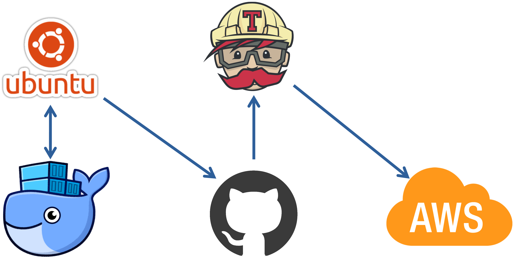

CICD on Single container

목표
- 도커, 도커컴포즈를 이용한 테스트베드, 운영환경 실행환경 구성
- Travis CI를 이용해 Github → Travic CI → AWS Beanstalk 파이프라인 구현
- CICD 체험이 목적이기 떄문에 Nginx, 리액트는 작업하지 않습니다
Init
React setup
- 작업 디렉터리를 생성합니다
mkdir simple_app
cd simple_app
- 현재 디렉터리에 react를 설치합니다
npx create-react-app ./

-
리액트가 잘 동작합니다
-
npm run test

-
npm run start

-
Dockerfile
- 개발환경(dev)과 운영환경(prod)는 특성이 다를 수 있기 때문에 도커파일을 분리해야합니다
- 개발 환경의 도커파일을 생성합니다
code dockerfile.dev
FROM node:alpine
WORKDIR /usr/src/app
COPY package.json ./
RUN npm install
COPY ./ ./
CMD ["npm", "run", "start"]
Deploy container
-
이미지를 빌드해봅니다
docker build -t dotoryeee/simple-app -f dockerfile.dev ./
- 생성이 완료되었으면 컨테이너로 돌려봅니다
docker run -it -p 3000:3000 dotoryeee/simple-app
-
컨테이너 서버가 잘 실행되었습니다

Mapping volume
-
실험을 위해 app.js 내용을 살짝 변경해줍니다

-
호스트에서 node_moules 폴더를 삭제했기 때문에 예외처리 해줍니다
docker run -it -p 3000:3000 -e CHOKIDAR_USEPOLLING=true -v /usr/src/app/node_modules -v $(pwd):/usr/src/app dotoryeee/simple-app
- 현재 WSL에서 작업 시 컨테이너 node_module 폴더 권한 에러(EACCESS)로 인해 다음과 같이 실행했습니다
``` docker run -it -p 3000:3000 -e CHOKIDAR_USEPOLLING=true -v $(pwd):/usr/src/app dotoryeee/simple-app
### restart
1. 코드 변경이 잘 적용되었습니다

2. 코드 편집 후 저장하면 새로고침조차 할 필요 없이 실시간으로 리액트에 적용됩니다

## Docker compose 사용
---
### compose 설정
1. 이번에는 도커 실행 명령어 단축을 위해 compose를 사용합니다
2. 컴포즈파일 작성을 시작합니다
code docker-compose.yml
version: "3" #도커 컴포즈 버전 services: #컴포즈에서 실행할 컨테이너들을 정의 react: #컨테이너 이름 build: #dockerfile 정보 ↓ context: . #현재 위치에 있다 dockerfile: dockerfile.dev #파일이름 ports: #컨테이너 포트 매핑 - "3000:3000" volumes: #호스트와 볼륨 매핑 - /usr/src/app/node_modules - ./:/usr/src/app stdin_open: true #리액트 앱을 종료할 떄 필요한 옵션(없으면 리액트에서 버스 발생) environment: - CHOKIDAR_USEPOLLING=true #리액트에서 핫 리로딩(실시간 업데이트)를 위한 옵션
1. 컴포즈를 실행합니다
```
docker-compose up
```
4. 리액트가 잘 시작되었습니다

### react test container 설정
1. 도커에서 리액트를 테스트 하는 기본적인 명령어는 다음과 같습니다
docker run -it {IMAGE} npm run test
2. 테스트도 소스코드를 핫 리로딩 할 수 있으면 매우 편리할 것입니다
다음과 같이 컴포즈파일에 컨테이너를 추가해주면 됩니다
tests: build: context: . dockerfile: Dockerfile.dev volumes: - /usr/src/app/node_modules - ./:/usr/src/app command: ["npm", "run", "test"]
3. 이번에는 재빌드 해야하니 build 명령을 추가해줍니다
docker-compose up --build
## 운영환경을 위한 dockerfile
---
1. 개발환경은 npm run start를 사용해 서버를 실행하지만 운영환경은 build후 Nginx를 이용합니다
2. 도커파일 작성을 시작합니다
code dockerfile
3. 운영환경용 dockerfile은 두 단계로 나눠집니다
- Builder stage : 빌드 파일을 생성합니다
FROM node:alpine as builder
이곳(as)부터 다음 FROM이 나올 떄 까지는 builder stage임을 명시
WORKDIR '/usr/src/app' COPY package.json ./ RUN npm install COPY ./ ./ RUN npm run build
생성된 빌드 파일은 /usr/src/app/build에 위치하게 됩니다
- Nginx stage : NginX를 가동하고 생성된 빌드 파일을 요청에 따라 제공합니다(Run stage)
FROM nginx
nginx 베이스 이미지
EXPOSE 80
AWS에 배포하기 위해 80포트 오픈
COPY --from=builder /usr/src/app/build /usr/share/nginx/html
--from=builder : 다른 stage에 있는 파일을 복사할 때, 다른 stage 이름을 명시
/usr/src/app/build , /usr/share/nginx/html : builder stage에서 생성된 파일을 nginx 폴더에 복사
- 참고 : dockerhub에서 제공하는 nginx 공식 설명
FROM nginx COPY static-html-directory /usr/share/nginx/html
4. 작성이 완료되면 이미지 빌드를 시작합니다
docker build -t dotoryeee/test2 ./
5. 이미지 생성이 완료되면 컨테이너를 실행해봅니다. nginx의 기본 포트는 80 입니다
docker run -it -p 7070:80 dotoryeee/test2
6. nginx에서 리액트가 잘 실행되었습니다

## Travis CI 세팅
---
### 연결
1. 트레비스CI를 사용하려면 github과 연동되어야 합니다. 사이트에 접속해 연동해줍니다
[Travis CI - Test and Deploy with Confidence](https://travis-ci.com/)
2. 로그인 후 깃헙에서 repository 접근 권한을 허용합니다

3. 트레비스에 repository가 연결된 것을 확인합니다

### Travis CI yaml 설정
1. 트레비스도 yaml파일로 설정하게 됩니다. 작성을 시작합니다
yaml파일은 매우 직관적이기 때문에 설명이 필요 없습니다
- 언어설정에 generic에 대한 설명은 [이곳](https://docs.travis-ci.com/user/languages/minimal-and-generic/)에서 확인할 수 있습니다
- — —coverage 옵션을 이용하면 콘솔에서 자세한 로그를 확인할 수 있습니다
code .travis.yml
sudo: required
language: generic
services: - docker
before_install: - echo "building image with dockerfile" - docker build -t dotoryeee/test2 -f dockerfile.dev ./
script: - docker run -e CI=true dotoryeee/test2 npm run test -- --coverage
after_success: - echo "TEST SUCCESS"
2. 깃헙에 푸쉬하면 트레비스에서 자동으로 작업을 시작합니다

3. 첫 CI는 에러입니다. 바로 이메일도 날라와서 편리합니다

4. 이후 코드를 수정하고 다시 커밋 → 푸시 해주면 travis ci가 자동으로 pull 하고 build합니다

## CD : AWS에 배포하기
---
1. AWS Beanstalk 에서 docker - amazon linux 플랫폼으로 생성을 시작합니다

2. Travis → AWS 접근을 위해 IAM AK, SK를 생성합니다. 이때 트래비스yaml파일에 직접 기입하면 보안상 위험하기 떄문에 트래비스 환경변수에 AK, SK를 넣어주고 배포시에 값을 가져오도록 설정합니다
3. 트래비스에서 more option → setting으로 진입합니다

4. 트래비스 환경변수에 AWS_ACCESS_KEY / AWS_SECRET_ACCESS_KEY를 추가합니다

5. AWS에 배포를 위해 travis를 설정합니다. 당연히 yaml 파일로.
code .travis.yml
6. 다음 내용을 추가하고 푸시해줍니다
deploy: provider: elasticbeanstalk region: "ap-northeast-2" app: "simple-app" env: "Simpleapp-env" #빈스톡 생성시 env 지정 가능 bucket_name: "elasticbeanstalk-ap-northeast-2-737382971423" #빈스톡 생성시 자동으로 생성된 s3 이름 bucket_path: "simple-app" #app 이름과 동일하게 작성 on: branch: master #어떤 브랜치를 배포할 것 인가 access_key_id: $AWS_ACCESS_KEY #트래비스에 등록된 환경변수 secret_access_key: $AWS_SECRET_ACCESS_KEY ```
-
빌드가 성공적으로 이뤄지면


-
자동으로 AWS Beanstalk에 배포됩니다